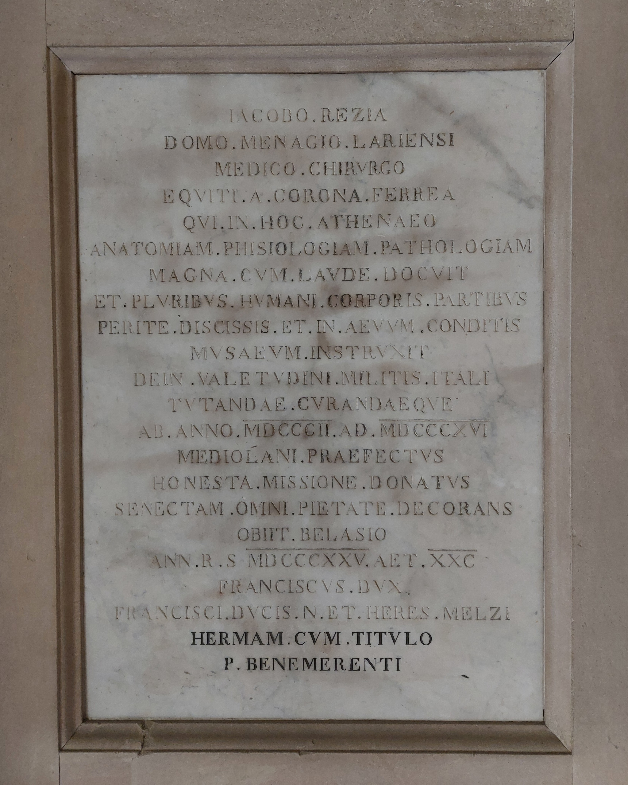

Ruolo: Anatomista, Chirurgo e Fondatore del Museo Anatomico (1745–1825)

"A Giacomo Rezia, originario di Menaggio sul Lario, medico e chirurgo, cavaliere della Corona Ferrea, che in questo Ateneo insegnò con grande lode anatomia, fisiologia e patologia, e dopo aver dissezionato con perizia e conservato molte parti del corpo umano, istituì il Museo. Poi prefetto a Milano dal 1802 al 1816 per tutelare e curare la salute dell'esercito italiano. Condonato dall'onorevole incarico, decorando la vecchiaia con ogni virtù, morì a Bellagio nell'anno della Salute Ricostituita 1825, all'età di 80 anni. Il duca Francesco, nipote del duca Francesco Melzi ed erede, pose questa stele con l'iscrizione al benemerito."
"To Giacomo Rezia, native of Menaggio sul Lario, physician and surgeon, knight of the iron crown, who in this University taught anatomy, physiology, and pathology with great praise, and after having expertly dissected and preserved many parts of the human body, he founded the Museum. Then he was prefect in Milan from 1802 to 1816 to protect and care for the health of the Italian army. Released from his honorable office, decorating his old age with every virtue, he died at Bellagio in the year of the Restored Health 1825, at the age of 80 years. Duke Francesco, nephew of Duke Francesco Melzi and heir, placed this stele with the inscription to the well-deserving."